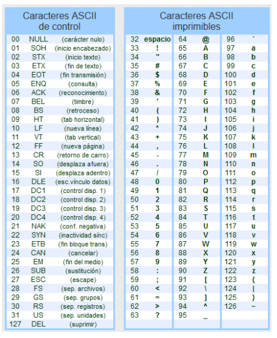
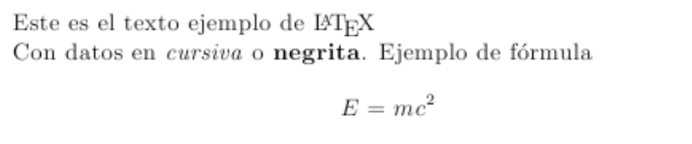

Introducción a los Lenguajes de Marcas
Codificación de la información (datos binarios, ASCII y Unicode), evolución histórica y clasificación de los lenguajes de marcas, organismos de estandarización (ISO y W3C) y visión general de HTML, XML, XHTML y JSON.
Codificación de la Información
1.1 Datos Binarios
Cualquier dato que no sea texto se considera dato binario. Por ejemplo: música, vídeo, imagen, un archivo Excel, un programa, etc.
La forma de codificar ese tipo de datos a su forma binaria es muy variable. Por ejemplo, en el caso de las imágenes cada punto (píxel) de la imagen se codifica utilizando su nivel de rojo, verde y azul. De modo que una sola imagen produce millones de dígitos binarios.
En cualquier caso, sea cual sea la información que estamos codificando en binario, para poder acceder a dicha información el ordenador necesita el software que sepa cómo decodificar la misma, es decir, saber qué significa cada dígito binario para traducirlo a una forma más humana. Eso solo es posible utilizando el mismo software con el que se codificó o bien otro software capaz de entender la información codificada.
Ideas clave
- En un ordenador toda la información está en binario.
- Existen muchas codificaciones posibles para las imágenes (RGB) y otros archivos.
- Para acceder a esta información se necesitará conocer el software que la decodifique.
1.2 Datos tipo texto
El texto es quizá la forma más humana de representar información. Antes de la llegada del ordenador, la información se transmitía mediante documentos o libros en papel. Esa forma de transmitir es milenaria y sigue siendo la forma más habitual de transmitir información entre humanos; incluso con la tecnología actual, aplicaciones como Twitter o WhatsApp siguen usando el texto como formato fundamental para transmitir información.
En cuanto apareció la informática como una ciencia digital, apareció también el problema de cómo codificar texto en forma de dígitos binarios para hacerlo representable en el ordenador. La forma habitual ha sido codificar cada carácter en una serie de números binarios, de modo que, por ejemplo, el carácter A se codifica como 01000001 y la B como 01000010.
El problema surgió por la falta de estandarización: la letra A se podía codificar de forma distinta en diferentes ordenadores y así nos encontrábamos con un problema al querer pasar datos de un ordenador a otro. Poco a poco aparecieron estándares para intentar que todo el hardware y software codificara los caracteres igual.
El problema de la codificación de texto que hacía incompatibles los documentos de texto entre diferentes sistemas se redujo cuando se ideó en 1967 un código estándar por parte de la Agencia de Estándares Norteamericana (ANSI), dicho código es el llamado ASCII (American Standard Code for Information Interchange, código estándar americano para el intercambio de información). El código utiliza el alfabeto inglés (que utiliza caracteres latinos) y para codificar todos los posibles caracteres necesarios para escribir en inglés se ideó un sistema de 7 bits (con 7 bits se pueden representar 128 símbolos, suficientes para todas las letras del alfabeto inglés, en minúsculas y mayúsculas, caracteres de puntuación, símbolos especiales e incluso símbolos de control).
El código ASCII es el siguiente:

Código ASCII
Creado en 1967. Utiliza 7 bits para representar 128 símbolos: alfabeto inglés, dígitos, signos de puntuación y caracteres especiales/de control.
ASCII extendido
Utiliza 8 bits (256 símbolos): los 128 símbolos del ASCII original más otros 128 para símbolos de otros idiomas (como tildes o la ñ).
UNICODE
Consigue incluir todos los caracteres de todas las lenguas mediante distintos formatos de codificación:
- UTF-8: utiliza 8 bits (1 byte) para ASCII e ISO-8859-1, 2 bytes para cirílico, griego, etc., 3 bytes para chino o japonés y 4 bytes para símbolos especiales.
- UTF-16: utiliza 2 bytes para los dos primeros grupos anteriores (ASCII, ISO-8859-1, cirílico, griego, etc.), 3 bytes para chino o japonés y 4 para el resto.
- UTF-32: utiliza 4 bytes para todos los sistemas. Es más sencillo de gestionar, aunque ocupa más espacio, por lo que apenas se utiliza.
Lenguajes de marcas
Las anotaciones incluidas en los documentos de texto han dado lugar a los lenguajes de marcas.
2.1 Introducción Histórica
Ejemplo de código LaTeX
\documentclass[12pt]{article}
\usepackage{amsmath}
\title{\Ejemplo}
\begin{document}
Este es el texto ejemplo de \LaTeX{}
Con datos en \emph{cursiva} o \textbf{negrita}.
Ejemplo de f\'ormula
\begin{align}
E &= mc^2
\end{align}
\end{document}Que con un traductor daría lugar al siguiente resultado:

Ejemplo de PostScript
%!PS
/Courier % Elige el tipo de letra
20 selectfont % Establece el tamaño de la letra y
% la toma como el tipo de letra en uso
72 500 moveto % Coloca el cursor en las coordenadas
% 72, 500 (contando los píxeles desde
% la esquina izquierda de la página)
(Hola mundo!) show % Escribe el texto entre paréntesis,
showpage % Imprime el resultado2.2 Tipos de Lenguajes de marcas
Orientados a la presentación
Al texto se añaden marcas que indican cómo presentarlo visualmente.
Orientados a la descripción
Las marcas dan significado al texto pero no indican cómo presentarlo (por ejemplo, si el texto es un nombre o una matrícula de coche). Ideales para almacenar datos.
Orientados a procedimientos
Las marcas se interpretan como órdenes. El archivo contiene instrucciones a realizar con el texto.
2.3 Organizaciones Desarrolladoras de Lenguajes de Marcas
Organización Internacional para la Estandarización
- Se crea en 1947, agrupa a 163 países y tiene su sede en Ginebra.
- Sus normas son voluntarias y no obligatorias.
- En 1986 publica SGML (Standard Generalized Markup Language).
World Wide Web Consortium
- Se crea en 1994 por Tim Berners-Lee.
- Función: tutelar el crecimiento y organización de la web.
- Normalizó el HTML.
- En 1998 aparece XML.
HTML (HyperText Markup Language)
Tim Berners-Lee utilizó SGML para definir un nuevo lenguaje de etiquetas que llamó HyperText Markup Language (lenguaje de marcado de hipertexto) para crear documentos transportables a través de Internet en los que fuera posible el hipertexto; es decir, que determinadas palabras marcadas de forma especial permitieran abrir un documento relacionado con ellas.
A pesar de tardar en ser aceptado, HTML fue un éxito rotundo y la causa indudable del éxito de Internet. Hoy en día casi todo en Internet se ve a través de documentos HTML, que popularmente se denominan páginas web.
3.1 Etiquetas y Atributos
Etiqueta
Texto entre < >. Existen etiquetas de inicio y de fin.
Ejemplo: <head>, </head>; <h1>, </h1>; <p>, </p>
Atributo
Par nombre-valor dentro de la etiqueta de inicio.
Ejemplo: <a href="http://www.google.es">enlace a google</a>
Ejemplo de documento HTML
<html>
<head>
<meta http-equiv="Content-Type" content="text/html; charset=utf-8"></meta>
</head>
<body>
<h1>Encabezado de nivel 1.</h1>
<a href="http://www.google.es">Texto del enlace</a> <!-- esto es un comentario -->
</body>
</html>Produce la siguiente visualización en el navegador:
Encabezado de nivel 1.
Texto del enlaceXML (Extensible Markup Language)
En el 2000 aparece el XML (Extensible Markup Language) como complemento al HTML. XML y HTML son lenguajes muy diferentes: su función principal es ayudarnos a organizar contenidos y eso hace que los documentos XML sean portables hacia diferentes tipos de aplicaciones.
Aunque ambos se basan en el SGML, cada uno ha sido diseñado para cumplir distintas funciones: el XML sirve para estructurar información de cualquier tipo, mientras que el HTML sirve para estructurar el contenido de texto de un documento web y su metainformación y presentarla a través de un navegador.
Ejemplo de XML
<biblioteca>
<libro>
<titulo>El juego de Ender</titulo>
<autor>Orson Scott Card</autor>
<paginas>325</paginas>
</libro>
<libro>
<titulo>La tabla de Flandes</titulo>
<autor nacimiento="1951">Arturo Pérez Reverte</autor>
<paginas>384</paginas>
</libro>
</biblioteca>XHTML (Extensible HyperText Markup Language)
Extensible HyperText Markup Language fue diseñado para extender HTML y permitir la compatibilidad con nuevos formatos de datos como vídeos, imágenes o lenguajes de scripting. A finales de 2009 se interrumpe el trabajo sobre la versión 2.0 porque el Grupo de Trabajo de Tecnología de Aplicación de Hipertexto Web (WHATWG) estaba trabajando en HTML5 al mismo tiempo, y este último fue el estándar que al final prevaleció. Sin embargo, HTML5 ya no es una aplicación de SGML, sino un lenguaje generalizado compatible con las versiones anteriores.
JSON (JavaScript Object Notation)
Se trata de una notación de datos procedente del lenguaje JavaScript estándar (concretamente ECMAScript de 1999). En el año 2002 se le daba soporte desde muchos de los navegadores y su fama ha sido tal que ahora se ha convertido en una notación independiente de JavaScript que compite claramente con XML.
Se trata de una notación que realmente no se considera lenguaje de marcas, ya que no hay diferencia en el texto a través de etiquetas, sino que se basa en que el texto se divide en dato y metadato. De modo que el símbolo de los dos puntos (:) separa el metadato del dato. Por otro lado, los símbolos de llave ({ }) y corchete ([ ]) permiten agrupar de manera correcta los datos.
Ejemplo de JSON
{
"nombre": "Jorge",
"apellido1": "Sánchez",
"dirección": {
"calle": "C/ Falsa nº 0",
"localidad": "Palencia",
"código Postal": "34001",
"país": "España"
},
"teléfonos": [
{
"tipo": "fijo",
"número": "999 999 999"
},
{
"tipo": "móvil",
"number": "666 666 666"
}
]
}